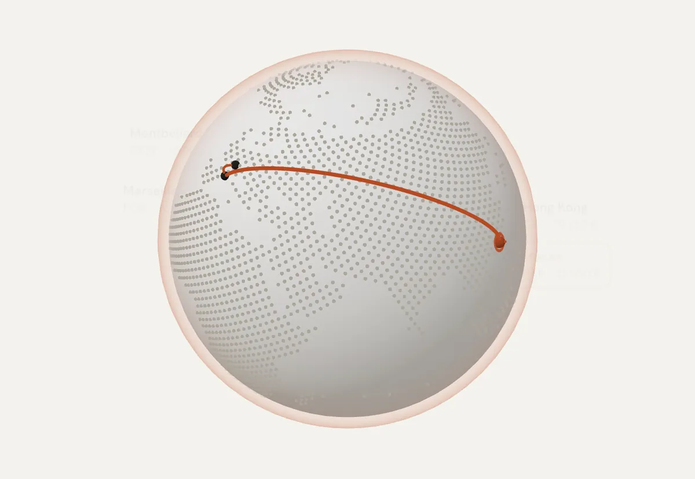

Bâtir une stratégie export
Pour les Tissages du Pays de Montbéliard : Macao comme marché pilote, entrée par un distributeur ou un partenariat B2B, puis Hong Kong, la Chine et Singapour.
La trace, AC33.01Caner Alpyürük, alternant acheteur à l’Hôpital Nord Franche-Comté
BUT GACO MCMO · BC3 · Concevoir la démarche marketing · Tronc commun GACO
Étudier un marché, choisir une cible, puis franchir une frontière.
Travaillé jusqu’au niveau 3, en BUT 3 : Piloter la démarche marketing à l’international

Ce domaine couvre la démarche marketing, de l’étude de marché au diagnostic, puis à la stratégie : segmentation, ciblage, positionnement, offre, et son développement à l’international.
Comprendre un marché et ses acteurs sert aussi l’acheteur : un sourcing se prépare comme une étude, et un fournisseur se juge sur sa position autant que sur son prix.
Chaque niveau a sa page : les apprentissages critiques dans les termes du programme, la situation où je les ai travaillés, mes traces et mon bilan. Les niveaux sont ceux travaillés, aucun résultat d’évaluation n’est publié.
Situation : Soutenons la Libye
Situations : NORMAL CTM Corporation, CAP Alpes Provence, Intersport Montbéliard
Situation : Export vers Macao
Quatre réalisations qui montrent ce domaine en pratique, chacune reliée à sa trace.
Pour les Tissages du Pays de Montbéliard : Macao comme marché pilote, entrée par un distributeur ou un partenariat B2B, puis Hong Kong, la Chine et Singapour.
La trace, AC33.01De 15 000 € départ usine à 20 050 € rendu Macao, soit 34,89 patacas par sac, et le CIF recommandé.
La trace, AC33.02SWOT, PESTEL et cinq forces de Porter notées sur 10 pour Intersport Montbéliard, puis six facteurs clés de succès.
La trace, AC23.01Trois offres pour Ray-Ban Meta, de 399 € à 449 €, chacune avec son produit, ses services et sa campagne.
La trace, AC23.02Le globe tourne de l’Europe vers l’Asie pendant que le trajet se dessine, étape par étape, avec le coût cumulé de l’expédition chiffré dans le dossier International Trade. Le tracé est schématique.
| Étape | Incoterm | Coût cumulé |
|---|---|---|
| Pays de Montbéliard | EXW, départ usine | 15 000 € |
| Marseille | FOB Marseille | 16 050 € |
| Hong Kong | CIF Hong Kong, recommandé | 19 150 € |
| Macao | DAP, rendu Macao | 20 050 € |
Les expériences où ce domaine a été travaillé en situation réelle, puis les études de cas qui le démontrent.
BUT 3 · Seul, en anglais
Le diagnostic export d’un fabricant de Montbéliard, le choix d’un marché pilote, la stratégie d’entrée et le chiffrage de l’expédition selon les Incoterms.
BUT 2 · En trinôme
Un entretien avec le directeur, un diagnostic stratégique, un audit du magasin sur plan et des propositions pour faire vivre la surface de vente.
BUT 2 · En équipe
Deux questionnaires, un concept de communication, des offres pour les familles et les clubs, et deux plans de communication mois par mois.
Explorer les autres domaines
Achats, vente et relation clientGestion de projetPilotage et performanceOmnicanal et digital